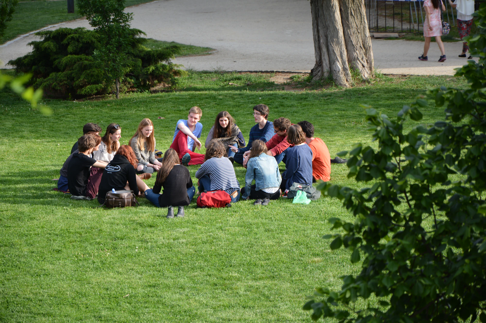

איגוד מרכזי הסיוע לנפגעות ולנפגעי תקיפה מינית
קווי סיוע ארציים (1202 לנשים, 1203 לגברים) וצ'אט "קולמילה", וכן רשת ארצית של מרכזי סיוע אזוריים לנפגעות ולנפגעי תקיפה מינית ומשפחותיהם.
את/ה לא לבד

טראומה משאירה לפעמים תחושה שאיש לא יוכל להבין אותנו באמת. בקבוצות התמיכה שלנו אין צורך בהסברים - נמצאים שם אנשים שחווים את אותו כובד ומבינים אותו מבפנים. שיחה קצרה, התכתבות או פשוט לשבת יחד בחדר, יכולים לחולל שינוי אמיתי.
כאן תוכלו למצוא קבוצות תמיכה (במפגשים פרונטליים או מקוונים בכל רחבי הארץ) המיועדות לנפגעי פוסט טראומה, כמו גם לבני המשפחה ולבני הזוג שמלווים אותם.
7 קהילות וקווי סיוע, בארץ ובאינטרנט.
קווי סיוע ארציים (1202 לנשים, 1203 לגברים) וצ'אט "קולמילה", וכן רשת ארצית של מרכזי סיוע אזוריים לנפגעות ולנפגעי תקיפה מינית ומשפחותיהם.
קבוצת תמיכה להורים לחיילות ולחיילים שנפצעו במלחמת חרבות ברזל - מרחב לשיתוף, התחברות והתחזקות.
קהילה תומכת וקבוצות תמיכה למשפחות ולבני/בנות זוג של מתמודדים עם פוסט-טראומה על רקע ביטחוני, ללימוד, חיזוק וליווי בהתמודדות המשפחתית.
מרכז טיפול ותמיכה נפשית לנפגעי פעולות איבה, טראומה וחרדה ומשפחותיהם - טיפול פרטני, קבוצתי ומשפחתי, בטלפון, בזום או פנים אל פנים.
קבוצת תמיכה ייחודית לבני ובנות זוג של נפגעי פוסט-טראומה, ללימוד והתחזקות בהתמודדות המשותפת.
קבוצות תמיכה וטיפוליות לנפגעי טראומה ופוסט-טראומה על רקע מלחמה וטרור ולבני משפחותיהם.
עשרות קבוצות טיפוליות הפתוחות להרשמה ברחבי הארץ לנכי ולנכות צה"ל המתמודדים עם פוסט-טראומה - מרחב לשיתוף, התחברות והתחזקות. ניתן לסנן קבוצות לפי אזור ונושא.
ער"ן, עזרה ראשונה נפשית, זמין בכל שעה. במצב חירום רפואי: מד"א 101.